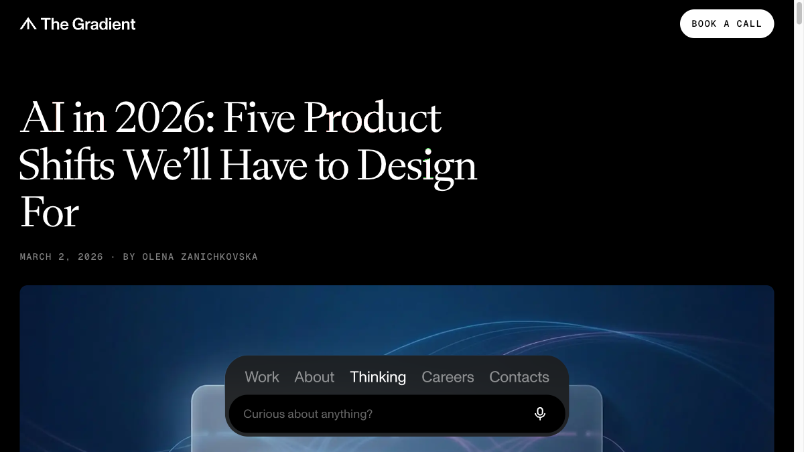

"Thanks! We'll review your submission within a few days." · Форма очищається
Автоматизація: Після відправки Make.com отримує дані, збагачує через Claude API (ELI5, теги, use cases), і надсилає в Telegram канал з позначкою [USER SUBMITTED]. Команда ставить реакцію → тул публікується.
About / Sponsor
/about · /sponsorОпціонально
01
About: Про проект
Місія AI Land · команда Other Land · чому куратований а не агрегатор
02
Sponsor: Умови спонсорства
Що включає спонсорство · ціна · CTA для звернення
Фічі / Інтерактивні блоки
Фіча
💬 "How can this help me?"

Референс — thegradient.com · "Discuss with your AI"
Кнопка присутня на кожній Tool Detail сторінці. Генерує контекстний промпт і відкриває вибраний AI асистент.
💬 Кнопка на detail сторінці→Вибір асистента→Новий таб з pre-filled промптом
Асистенти
ChatGPT · Claude · Perplexity
Формат промпту
"I want to understand how [Tool Name] can help me. Here's what this tool does: [description]. Use cases: [use_cases]. Help me understand: is this relevant for my work? How to start? Realistic expectations?"
namedescriptionuse_cases[]
Технічна реалізація
Чисто фронтенд · URL-encode промпту · window.open() до відповідного сервісу. Без API викликів.
Градієнт (унікальний per тул або per категорія) · назва тулу великим шрифтом по центру
namecover_color
M
Card Body
Назва тулу · тег категорії (pill) · ELI5 цитата курсивом
namecategoryeli5
B
Card Footer
Emoji теги (до 3) · ціна праворуч
tags[]price_label
Emoji Tag System
8 тегів — на картках і detail сторінках
🎨 Creative · творчі задачі
🔥 Popular · широко відомий
🧠 Pro-level · для досвідчених
🚀 Fast · швидкий результат
🌱 Beginner · легко почати
👥 Team · командні функції
💰 Pricey · дорожче середнього
✨ New · нещодавно вийшов
Генерація тегів: Claude API автоматично призначає теги при додаванні тулу через weekly pipeline або user submission. Команда може коригувати в Telegram перед апрувом.
Відкриті питання — потрібні до старту
01Figma-файл дизайну готовий до старту — чи розробляємо по прототипу і замінюємо пізніше?
02Прев'ю тулу: автоматичний скріншот сайту — чи лого/зображення вручну? (впливає на pipeline)
03Джерела для weekly research: Product Hunt? Конкретні сайти? Соцмережі?
04Telegram канал і бот вже створені — чи робимо з нуля?
05Стартовий контент: хто і як завантажує перші 50-150 тулів для launch?
06ELI5 і теги — Claude генерує і публікує as-is, чи команда може редагувати в Telegram перед реакцією?